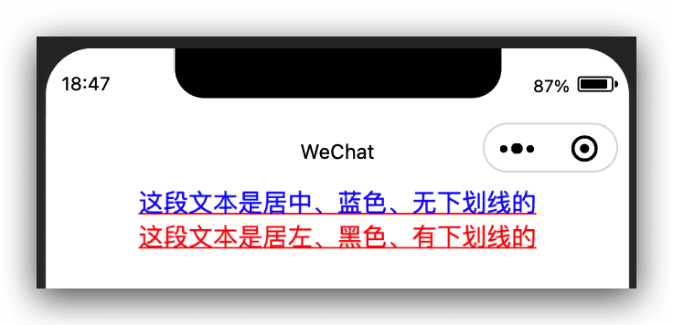
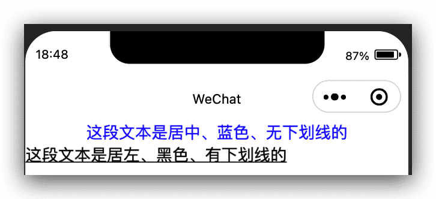

微信小程序自定义组件-组件的模版与样式
类似于页面，自定义组件拥有自己的 wxml 模板和 wxss 样式。
组件模板
组件模板的写法与页面模板相同。组件模板与组件数据结合后生成的节点树，将被插入到组件的引用位置上。
在组件模板中可以提供一个 <slot> 节点，用于承载组件引用时提供的子节点。
代码示例：
1 | <!-- 组件模板 --> |
1 | <!-- 引用组件的页面模板 --> |
注意，在模板中引用到的自定义组件及其对应的节点名需要在 json 文件中显式定义，否则会被当作一个无意义的节点。除此以外，节点名也可以被声明为抽象节点。
模板数据绑定
与普通的 WXML 模板类似，可以使用数据绑定，这样就可以向子组件的属性传递动态数据。
代码示例：
1 | <!-- 引用组件的页面模板 --> |
1 | const app = getApp() |
1 | <!-- 组件模板 --> |
1 | // components/component-tag-name.js |
在以上例子中，组件的属性 propA 和 propB 将收到页面传递的数据。页面可以通过 setData 来改变绑定的数据字段。
注意：这样的数据绑定只能传递 JSON 兼容数据。自基础库版本 2.0.9 开始，还可以在数据中包含函数（但这些函数不能在 WXML 中直接调用，只能传递给子组件）。
组件 wxml 的 slot
在组件的 wxml 中可以包含 slot 节点，用于承载组件使用者提供的 wxml 结构。
默认情况下，一个组件的 wxml 中只能有一个 slot 。需要使用多 slot 时，可以在组件 js 中声明启用。
1 | Component({ |
此时，可以在这个组件的 wxml 中使用多个 slot ，以不同的 name 来区分。
1 | <!-- 组件模板 --> |
使用时，用 slot 属性来将节点插入到不同的 slot 上。
1 | <!-- 引用组件的页面模板 --> |
组件样式
组件对应 wxss 文件的样式，只对组件wxml内的节点生效。编写组件样式时，需要注意以下几点：
- 组件和引用组件的页面不能使用id选择器（
#a）、属性选择器（[a]）和标签名选择器，请改用class选择器。 - 组件和引用组件的页面中使用后代选择器（
.a .b）在一些极端情况下会有非预期的表现，如遇，请避免使用。 - 子元素选择器（
.a>.b）只能用于view组件与其子节点之间，用于其他组件可能导致非预期的情况。 - 继承样式，如
font、color，会从组件外继承到组件内。 - 除继承样式外，
app.wxss中的样式、组件所在页面的的样式对自定义组件无效（除非更改组件样式隔离选项）。
1 | #a { } /* 在组件中不能使用 */ |
除此以外，组件可以指定它所在节点的默认样式，使用 :host 选择器（需要包含基础库 1.7.2 或更高版本的开发者工具支持）。
代码示例：
1 | /* 组件 custom-component.wxss */ |
组件样式隔离
默认情况下，自定义组件的样式只受到自定义组件 wxss 的影响。除非以下两种情况：
app.wxss或页面的wxss中使用了标签名选择器（或一些其他特殊选择器）来直接指定样式，这些选择器会影响到页面和全部组件。通常情况下这是不推荐的做法。- 指定特殊的样式隔离选项
styleIsolation。
1 | Component({ |
styleIsolation 选项从基础库版本 2.6.5 开始支持。它支持以下取值：
isolated表示启用样式隔离，在自定义组件内外，使用 class 指定的样式将不会相互影响（一般情况下的默认值）；apply-shared表示页面 wxss 样式将影响到自定义组件，但自定义组件 wxss 中指定的样式不会影响页面；shared表示页面 wxss 样式将影响到自定义组件，自定义组件 wxss 中指定的样式也会影响页面和其他设置了apply-shared或shared的自定义组件。（这个选项在插件中不可用。）
使用后两者时，请务必注意组件间样式的相互影响。
如果这个 Component 构造器用于构造页面 ，则默认值为 shared ，且还有以下几个额外的样式隔离选项可用：
page-isolated表示在这个页面禁用 app.wxss ，同时，页面的 wxss 不会影响到其他自定义组件；page-apply-shared表示在这个页面禁用 app.wxss ，同时，页面 wxss 样式不会影响到其他自定义组件，但设为shared的自定义组件会影响到页面；page-shared表示在这个页面禁用 app.wxss ，同时，页面 wxss 样式会影响到其他设为apply-shared或shared的自定义组件，也会受到设为shared的自定义组件的影响。
从小程序基础库版本 2.10.1 开始，也可以在页面或自定义组件的 json 文件中配置 styleIsolation （这样就不需在 js 文件的 options 中再配置）。例如：
1 | { |
此外，小程序基础库版本 2.2.3 以上支持 addGlobalClass 选项，即在 Component 的 options 中设置 addGlobalClass: true 。 这个选项等价于设置 styleIsolation: apply-shared ，但设置了 styleIsolation 选项后这个选项会失效。
代码示例：
1 | /* 组件 custom-component.js */ |
外部样式类
基础库 1.9.90 开始支持，低版本需做兼容处理。
有时，组件希望接受外部传入的样式类。此时可以在 Component 中用 externalClasses 定义段定义若干个外部样式类。
这个特性可以用于实现类似于 view 组件的 hover-class 属性：页面可以提供一个样式类，赋予 view 的 hover-class ，这个样式类本身写在页面中而非 view 组件的实现中。
注意：在同一个节点上使用普通样式类和外部样式类时，两个类的优先级是未定义的，因此最好避免这种情况。
代码示例：
1 | /* 组件 custom-component.js */ |
1 |
|
这样，组件的使用者可以指定这个样式类对应的 class ，就像使用普通属性一样。在 2.7.1 之后，可以指定多个对应的 class 。
代码示例：
1 | <!-- 页面的 WXML --> |
引用页面或父组件的样式
基础库 2.9.2 开始支持，低版本需做兼容处理。
即使启用了样式隔离 isolated ，组件仍然可以在局部引用组件所在页面的样式或父组件的样式。
例如，如果在页面 wxss 中定义了：
1 | .blue-text { |
在这个组件中可以使用 ~ 来引用这个类的样式：
1 | <view class="~blue-text"> 这段文本是蓝色的 </view> |
如果在一个组件的父组件 wxss 中定义了：
1 | .red-text { |
在这个组件中可以使用 ^ 来引用这个类的样式：
1 | <view class="^red-text"> 这段文本是红色的 </view> |
也可以连续使用多个 ^ 来引用祖先组件中的样式。
注意：如果组件是比较独立、通用的组件，请优先使用外部样式类的方式，而非直接引用父组件或页面的样式。
虚拟化组件节点
基础库 2.11.2 开始支持，低版本需做兼容处理。
默认情况下，自定义组件本身的那个节点是一个“普通”的节点，使用时可以在这个节点上设置 class style 、动画、 flex 布局等，就如同普通的 view 组件节点一样。
1 | <!-- 页面的 WXML --> |
1 | .class-in-virtual-host { |
但有些时候，自定义组件并不希望这个节点本身可以设置样式、响应 flex 布局等，而是希望自定义组件内部的第一层节点能够响应 flex 布局或者样式由自定义组件本身完全决定。
这种情况下，可以将这个自定义组件设置为“虚拟的”：
1 | <view class="class blue"> |
1 | Component({ |
1 | .blue { |
需要注意的是，自定义组件节点上的 class style 和动画将不再生效，但仍可以：
- 将 style 定义成
properties属性来获取 style 上设置的值； - 将 class 定义成
externalClasses外部样式类使得自定义组件 wxml 可以使用 class 值。
代码示例：
不设置virtualHost为true:
设置virtualHost为true：
微信小程序自定义组件-组件的模版与样式